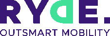
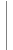
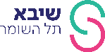
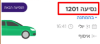

שלום למצטרפים לשירות ההסעות החדש לתושבי פ"ת וברוכים הבאים.
בקרוב יוצא לדרך פיילוט ההסעות בעירכם ואנחנו רוצים לברך אתכם על הצטרפותכם לשירות ההסעות החכם המגיע עד אליך!
בתאריך 8/8/21 תשלח הודעת סמס המכילה קישור לאפליקציית RYDE להזמנת נסיעות.
יש להוריד את האפליקציה מחנות האפליקציות ולהתחבר באמצעות הזנת מספר הנייד ואימות קצר.
יש להירשם עבור נסיעות ליום שלישי ה 10/8 ואילך בלבד.
הגעה - זמני ההסעות נקבעו ע"י הנהלת בית החולים ומתייחסים לזמן ההגעה לתחנת היעד.
תחנת איסוף - ניתן לבחור באפליקציה כל תחנה באזור העיר פתח תקווה.
הגעה בוקר 06:30 ( למשמרת שמתחילה בשעה 7:00)
הגעה בוקר 07:30 (עובדים שמתחילים בשעה 8:00)
הגעה צהריים 14:30 (למשמרת שמתחילה בשעה 15:00)
הגעה לילה 22:30 (משמרת שמתחילה בשעה 23:00)
לתשומת לבכם!!! על מנת להמנע מאיחורים, בשלב הראשון זמני ההגעה לוקחים בחשבון פקקים בכניסה לשיבא. הגעה לכל המאוחר 15 ד' לפני תחילת משמרת.
פיזור - זמני הפיזור מתייחסים לשעת ההמתנה לרכב בתחנה, נא להתייצב כמה דק' קודם.
תחנת פיזור - ניתן לבחור באפליקציה מבין כמה נקודות ברחבי בית החולים.
פיזור 15:10
פיזור 16:10
פיזור 17:10
פיזור 19:10
פיזור ערב 23:15
פיזור לילה 07:30

חשוב מאוד!!!
באפליקציה, תחת "הנסיעות שלי" יש את מספר הנסיעה, מספר זה יופיע כשלט על גבי הרכב.
יש להקפיד ולעלות לרכב עם מספר הרכב הנכון.
בימים הראשונים להסעות אנו בוחנים בתשומת לב את המסלולים ואת זמני האיסוף ונבצע תיקונים תוך כדי קבלת חיווי מהשטח. לפיכך, המשוב שלכם הכרחי על מנת שנשתפר ונשפר את השירות מיום ליום.
בימים אלו אנו מבקשים מכם סבלנות ואורך הרוח ומבטיחים שניקח בחשבון כל משוב וניישם בשטח.
תודה ובהצלחה
תחבורת חוץ שיבא וחברת RYDE